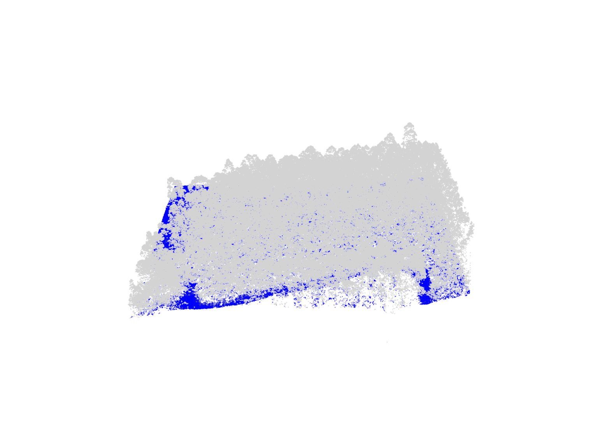
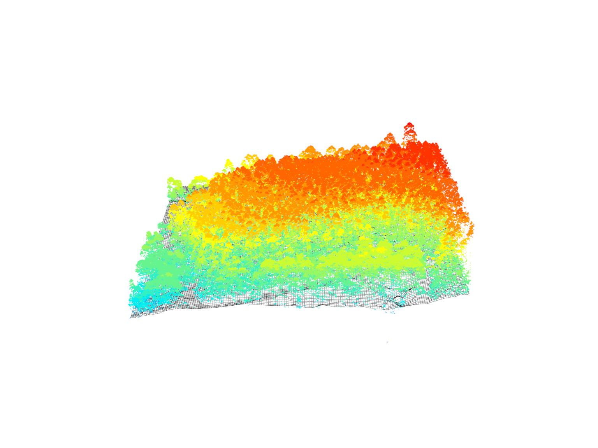
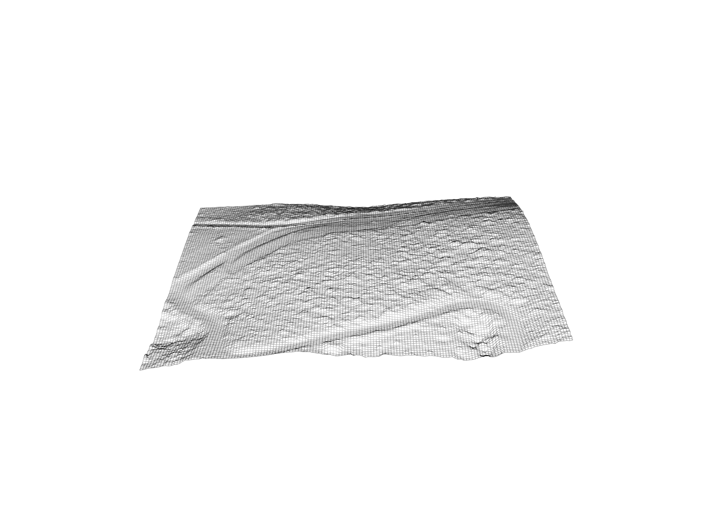
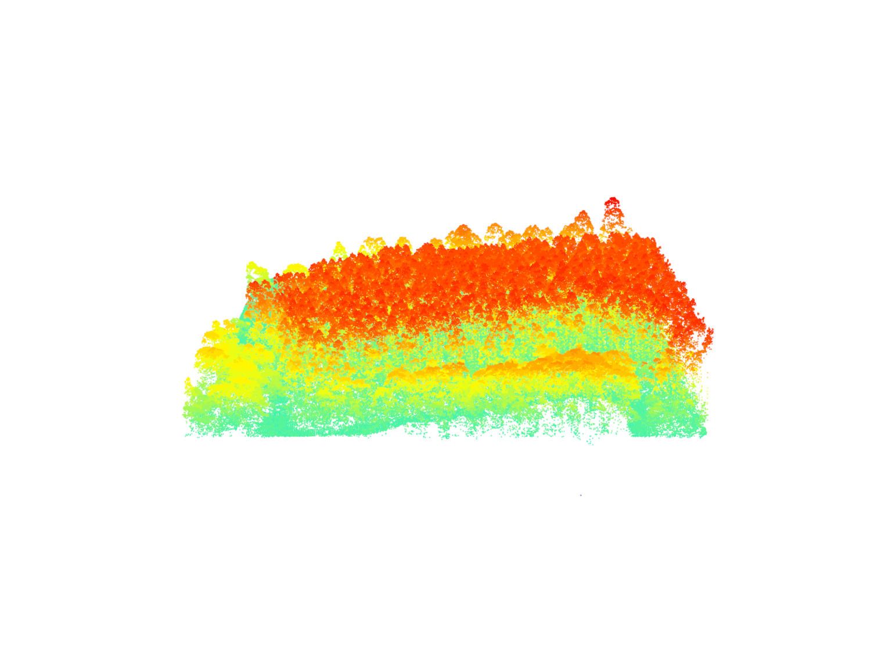
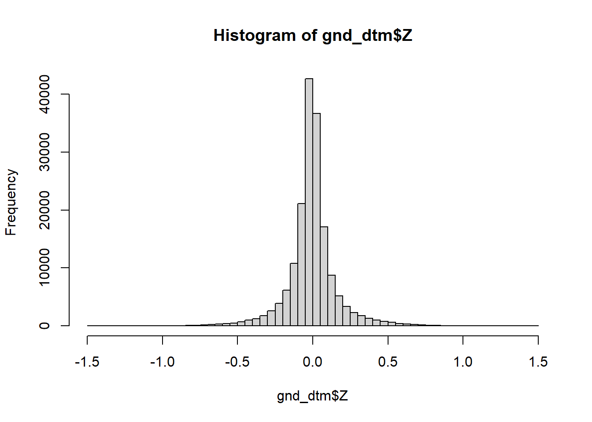
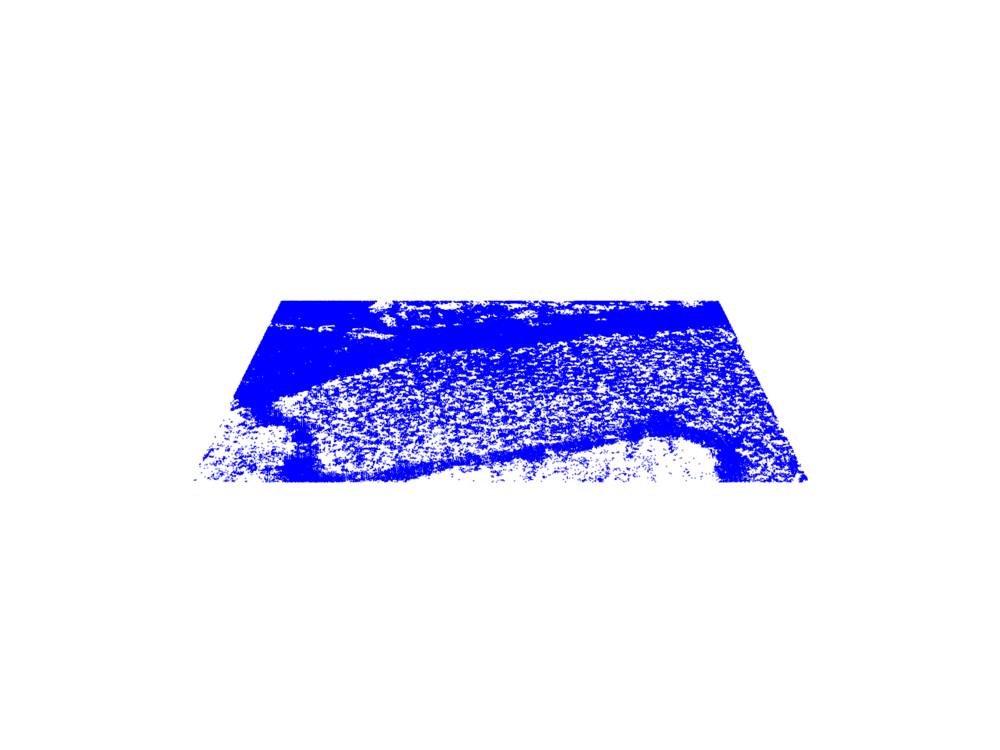
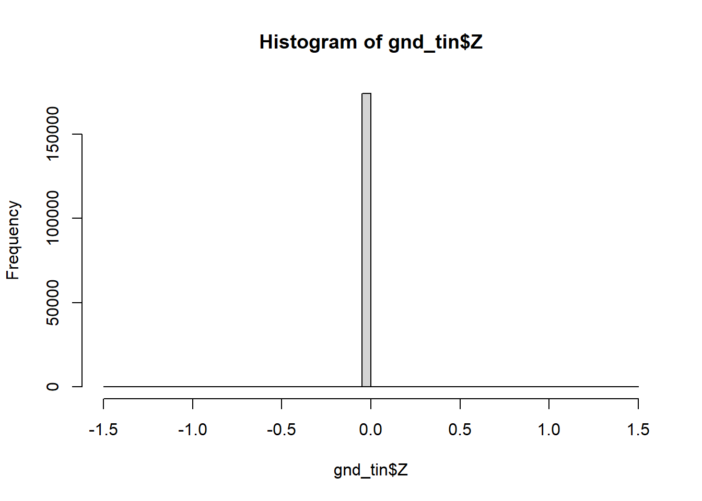

Digital Terrain Models
Relevant resources
Overview
This tutorial explores the creation of a Digital Terrain Model (DTM) from LiDAR data. It demonstrates two algorithms for DTM generation: ground point triangulation, and inverse-distance weighting. Additionally, the tutorial showcases DTM-based normalization and point-based normalization, accompanied by exercises for hands-on practice.
Environment
# Clear environment
rm(list = ls(globalenv()))
# Load packages
library(lidR)DTM (Digital Terrain Model)
In this section, we’ll generate a Digital Terrain Model (DTM) from LiDAR data using two different algorithms: tin() and knnidw().
Data Preprocessing
# Load LiDAR data and filter out non-ground points
las <- readLAS(files = "data/MixedEucaNat.laz", filter = "-set_withheld_flag 0")Here, we load the LiDAR data and exclude points flagged as withheld.
Visualizing LiDAR Data
We start by visualizing the entire LiDAR point cloud to get an initial overview.
plot(las)
Visualizing the LiDAR data again, this time to distinguish ground points (blue) more effectively.
plot(las, color = "Classification")
Triangulation Algorithm - tin()
We create a DTM using the tin() algorithm with a resolution of 1 meter.
# Generate a DTM using the TIN (Triangulated Irregular Network) algorithm
dtm_tin <- rasterize_terrain(las = las, res = 1, algorithm = tin())A degenerated point in LiDAR data refers to a point with identical XY(Z) coordinates as another point. This means two or more points occupy exactly the same location in XY/3D space. Degenerated points can cause issues in tasks like creating a digital terrain model, as they don’t add new information and can lead to inconsistencies. Identifying and handling degenerated points appropriately is crucial for accurate and meaningful results.
Visualizing DTM in 3D
To better conceptualize the terrain, we visualize the generated DTM in a 3D plot.
# Visualize the DTM in 3D
plot_dtm3d(dtm_tin)Visualizing DTM with LiDAR Data
We overlay the DTM on the LiDAR data (non-ground points only) for a more comprehensive view of the terrain.
# Filter for non-ground points to show dtm better
las_ng <- filter_poi(las = las, Classification != 2L)
# Visualize the LiDAR data with the overlaid DTM in 3D
x <- plot(las_ng, bg = "white")
add_dtm3d(x, dtm_tin, bg = "white")
Inverse-Distance Weighting (IDW) Algorithm - knnidw()
Next, we generate a DTM using the IDW algorithm to compare results with the TIN-based DTM.
# Generate a DTM using the IDW (Inverse-Distance Weighting) algorithm
dtm_idw <- rasterize_terrain(las = las, res = 1, algorithm = knnidw())Visualizing IDW-based DTM in 3D
We visualize the DTM generated using the IDW algorithm in a 3D plot.
# Visualize the IDW-based DTM in 3D
plot_dtm3d(dtm_idw)
Normalization
We’ll focus on height normalization of LiDAR data using both DTM-based and point-based normalization methods.
DTM-based Normalization
We perform DTM-based normalization on the LiDAR data using the previously generated DTM.
# Normalize the LiDAR data using DTM-based normalization
nlas_dtm <- normalize_height(las = las, algorithm = dtm_tin)Visualizing Normalized LiDAR Data
We visualize the normalized LiDAR data, illustrating heights relative to the DTM.
# Visualize the normalized LiDAR data
plot(nlas_dtm)
Filtering Ground Points
We filter the normalized data to keep only the ground points.
# Filter the normalized data to retain only ground points
gnd_dtm <- filter_ground(las = nlas_dtm)Visualizing Filtered Ground Points
We visualize the filtered ground points, focusing on the terrain after normalization.
# Visualize the filtered ground points
plot(gnd_dtm)
Histogram of Normalized Ground Points
A histogram helps us understand the distribution of normalized ground points’ height.
# Plot the histogram of normalized ground points' height
hist(gnd_dtm$Z, breaks = seq(-1.5, 1.5, 0.05))
DTM-based Normalization with TIN Algorithm
We perform DTM-based normalization on the LiDAR data using the TIN algorithm.
# Normalize the LiDAR data using DTM-based normalization with TIN algorithm
nlas_tin <- normalize_height(las = las, algorithm = tin())Visualizing Normalized LiDAR Data with TIN
We visualize the normalized LiDAR data using the TIN algorithm, showing heights relative to the DTM.
# Visualize the normalized LiDAR data using the TIN algorithm
plot(nlas_tin, bg = "white")Filtering Ground Points (TIN-based)
We filter the normalized data (TIN-based) to keep only the ground points.
# Filter the normalized data (TIN-based) to retain only ground points
gnd_tin <- filter_ground(las = nlas_tin)Visualizing Filtered Ground Points (TIN-based)
We visualize the filtered ground points after TIN-based normalization, focusing on the terrain.
# Visualize the filtered ground points after TIN-based normalization
plot(gnd_tin)
Histogram of Normalized Ground Points (TIN-based)
A histogram illustrates the distribution of normalized ground points’ height after TIN-based normalization.
# Plot the histogram of normalized ground points' height after TIN-based normalization
hist(gnd_tin$Z, breaks = seq(-1.5, 1.5, 0.05))
Exercises
E1.
Plot and compare these two normalized point-clouds. Why do they look different? Fix that. Hint: filter.
# Load and visualize nlas1 and nlas2
las1 = readLAS("data/MixedEucaNat.laz", filter = "-set_withheld_flag 0")
nlas1 = normalize_height(las1, tin())
nlas2 = readLAS("data/MixedEucaNat_normalized.laz", filter = "-set_withheld_flag 0")
plot(nlas1)
plot(nlas2)E2.
Clip a plot somewhere in MixedEucaNat.laz (the non-normalized file).
E3.
Compute a DTM for this plot. Which method are you choosing and why?
E4.
Compute a DSM (digital surface model). Hint: Look back to how you made a CHM.
E5.
Normalize the plot.
E6.
Compute a CHM.
E7.
Compute some metrics of interest in this plot with cloud_metrics().
Conclusion
This tutorial covered the creation of Digital Terrain Models (DTMs) from LiDAR data using different algorithms and explored height normalization techniques. The exercises provided hands-on opportunities to apply these concepts, enhancing understanding and practical skills.